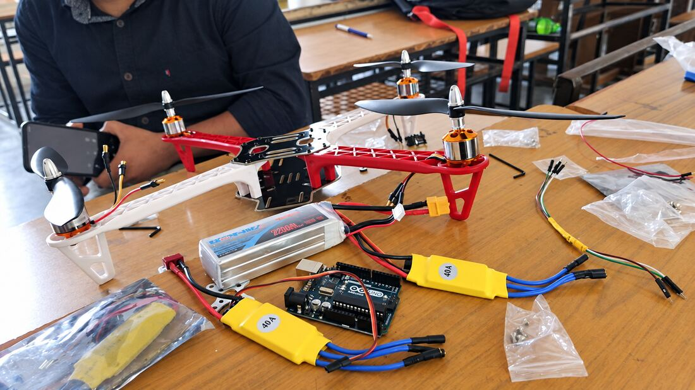
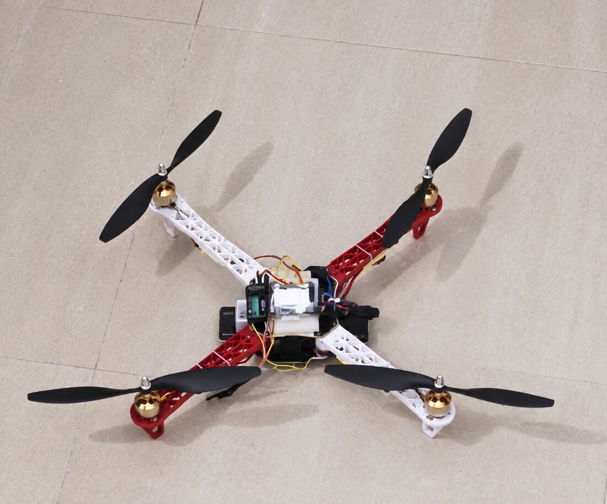
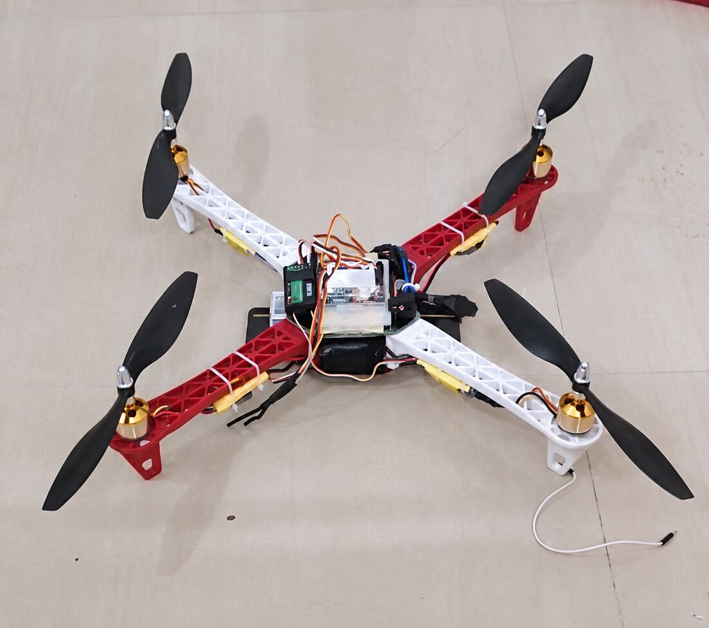

11 / AERIAL
F450 Quadcopter
A four-propeller brushless drone built for aerial security work.
- Role
- Build and integration, in a team
- Context
- Independent R&D build, Jan – Feb 2022
- Tools
- F450 airframe, brushless DC motors, 40 A ESCs, Arduino Uno, 2200 mAh LiPo, FS-i6 transmitter
- Scope
- Airframe assembly, motor and ESC wiring, transmitter binding, flight testing
- Output
- A flying quadcopter with a 50 ft control range
- Skills
- Airframe assembly
- Brushless motor and ESC setup
- RC transmitter binding
- Power budgeting
- Flight testing
A four-propeller drone built around the idea of aerial security, using brushless DC motors on an F450 airframe. Control range is 50 feet on an FS-i6 transmitter.
The build covered airframe assembly, motor mounting and ESC wiring, power distribution from a 2200 mAh pack, and transmitter binding, followed by flight testing. A team continued the R&D from this platform to explore further applications.



50 ft control range4x brushless motors40 A ESCs
Airframe assemblyBrushless motor and ESC setupRC transmitter bindingPower budgeting